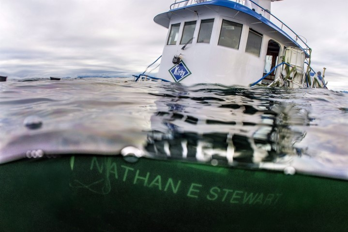

Heiltsuk territory stretches over 16,000 sq kms and is situated in the Great Bear Rainforest. Because the Heiltsuk territory is so isolated from many urban centres the territory was largely untouched. Today large scale industrial logging, fishing, shellfish harvesting, as well as tourism is the main employers in the region. There is a fish plant, airport, ferry terminal, government dock, 2 denominal Churches, band store, liquor store, post office, 3 schools & a college, & a fuel station. All entities are operated under the Heiltsuk Tribal Council (except the 2 churches) and provide employment opportunities.
Recent developments include an extended airport runway, new BC Ferries terminal, new Band Store (old one burned down in 2013), and a new Big House with a completion date in fall 2019. Other recent projects include a commmunity garden and a boardwalk trail.
Bella Bella has signifigant fisheries opportunities, shell fish harvesting, and Row on Kelp fisheries. There was a large spill in 2016 and this spill removed $200,000 from the local economy in shellfish harvsting. The Heiltsuk Nation is strongly against any oil pipe developments anywhere on the BC coast.
Moving forward the Heiltsuk would like to focus on language revitalization and will be spending a minimum $1 million per year for 5 years on several language programs such as: